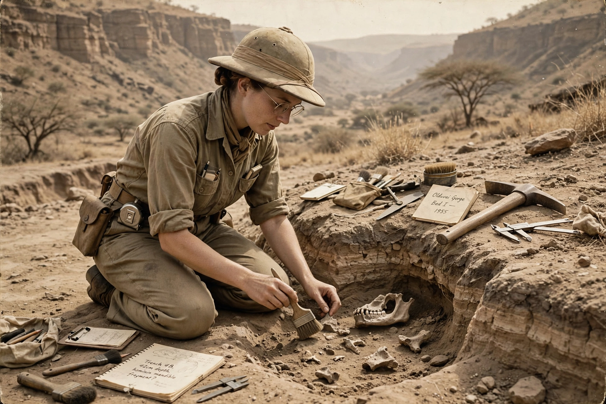

| Mary Leakey | |
|---|---|
| Born | 6 February 1913, London, England |
| Died | 9 December 1996 (aged 83), Nairobi, Kenya |
| Nationality | British |
| Known for | Paranthropus boisei skull (1959); Laetoli footprints |
| Fields | Palaeoanthropology, archaeology |
| Spouse | Louis Leakey |

Mary Douglas Leakey (6 February 1913 – 9 December 1996) was a British palaeoanthropologist who made several of the most important fossil discoveries in the study of human evolution. Working for decades at Olduvai Gorge in Tanzania with her husband Louis Leakey, she found the first skull of Paranthropus boisei in 1959 and, later, the Laetoli footprint trails — direct evidence of bipedal walking nearly 3.7 million years ago.
Born Mary Douglas Nicol in London, she was the daughter of landscape artist Erskine Edward Nicol. As a child travelling in France she visited prehistoric cave sites and developed a passion for archaeology. With no formal university education, she learned excavation and illustration on digs in England, producing meticulous drawings of stone tools. Her skill as an illustrator brought her to the attention of Louis Leakey, whom she married in 1936.
From the late 1930s the Leakeys worked at Olduvai Gorge in the Serengeti. On 17 July 1959, while Louis was ill in camp, Mary found fragments of a robust hominin skull — the specimen nicknamed "Nutcracker Man," later classified as Paranthropus boisei and dated to about 1.75 million years, demonstrating that early hominins were far older than previously believed. Her careful stratigraphic and typological work at Olduvai, set out in Olduvai Gorge, Vol. 3 (1971), systematised the Oldowan stone-tool sequence.
At Laetoli, south of Olduvai, her team excavated fossilised footprint trails in volcanic ash dated to about 3.66 million years ago. Reported in 1978–79, the trails — made by at least two, possibly three, individuals of Australopithecus afarensis — showed fully bipedal, striding locomotion long before the enlargement of the hominin brain, reshaping scientific understanding of human evolution.
After Louis's death in 1972, Mary continued directing work at Olduvai and Laetoli before retiring to Nairobi, where she wrote her autobiography, Disclosing the Past (1984). Her son Richard Leakey also became a noted palaeoanthropologist. Mary's discoveries, and her rigorous field methods, established East Africa as the central arena in the search for human origins.